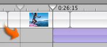

Locking audio clips to video
You can lock an audio clip to a particular point in a video clip so that when you move the video clip, the audio moves with it. This is useful if you want a sound effect, narration, or a song to always accompany a specific part of your movie.

To lock an audio clip to video:
- If necessary, choose iMovie HD > Preferences, click General, and select the "Snap to items in Timeline" checkbox.
- Click the Timeline Viewer button (A, shown above).
- Drag the playhead (B, shown above) to the frame where you want the the audio to start.
- Drag the audio clip so that its starting point lines up with the "ghosted" playhead (shown below).
- Choose Advanced > "Lock Audio Clip at Playhead."
Tip: To precisely adjust the playhead position, press the Left or Right Arrow key to move the playhead one frame at a time. To move the playhead in ten-frame increments, hold down the Shift key while pressing the arrow key.
A yellow line appears and the edge of the clip automatically "snaps" against the edge of the "ghosted playhead" when you reach the frame you selected in step 3.
Yellow "push pins" indicate that the audio is locked to the video.

To unlock the audio, select the clip and choose Advanced > Unlock Audio Clip.
Note: You can still change the location of a locked audio clip by dragging it. However, the video clip does not move with it, and iMovie automatically locks the audio clip to its new location.
Related Topics
Showing more detail in the timeline viewer
 Was this page helpful? Send feedback.
Was this page helpful? Send feedback.